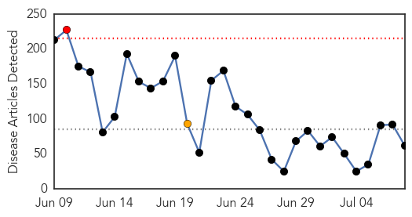
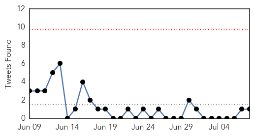
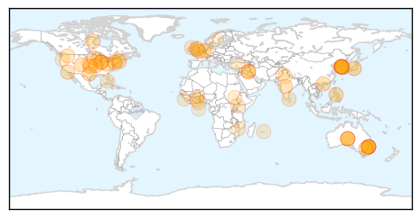
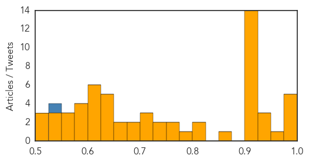

Unknown
30-Day Web Trend
1 alerts, 1 warnings

30-Day Twitter Trend
0 alerts, 0 warnings

Article Locations

Article Confidences
Top Articles:
- 0.992
- Spike in Canberra flu cases
- 0.986
- Asia Minute: South Korean MERS Cases Stabilizing
- 0.985
- First MERS death in South Korea after eight days
- 0.985
- First MERS death in South Korea after eight days
- 0.975
- Texas Cyclospora Outbreak
- 0.963
- Philippines Visitor Tests Positive for MERS
- 0.931
- Creutzfeldt-Jakob Disease not mad cow disease, NSW health official says, after Sydney man Frank Burton's diagnosis
- 0.930
- 15 cases of Rabbit Fever in Colorado
- 0.930
- Flu cases 50% higher than last year
- 0.923
- Twenty treated for MURINE TYPHUS in TEXAS ~ COLORADO now confirms 15 human cases of TULAREMIA this year ~ Captive DEER in TEXAS found with CHRONIC WASTING DISEASE ~ RABIES reports from CAx2 & SC.
- 0.917
- Chicago Tribune
- 0.917
- Chicago Tribune
- 0.917
- Chicago Tribune
- 0.917
- Chicago Tribune
- 0.917
- Chicago Tribune
- 0.917
- Chicago Tribune
- 0.917
- Chicago Tribune
- 0.917
- Chicago Tribune
- 0.917
- Chicago Tribune
- 0.917
- Chicago Tribune
- 0.917
- Rare and deadly, Creutzfeldt-Jakob disease remains a bit of a medical mystery
- 0.914
- MERS outbreak: S. Korea reports first death in eight days
- 0.909
- Exotic Squirrels Transmit Deadly Virus to Breeders in Germany, Study Finds
- 0.860
- Tasmania lagging on vaccination access
- 0.810
- Family of woman who died last month believe she had 'Mad Cow Disease'
- 0.806
- Health: How Making Patients Pay for Drugs Breeds Superbugs
- 0.786
- CHART: Flu cases in Australia are up 50% this winter
- 0.768
- Girl bit by rabid bat at Liberty Lake park
- 0.756
- The World On Arirang
- 0.735
- Child in critical condition after contracting rare brain infection swimming in Lake Minnewaska
- 0.729
- Variant of mad cow disease not contagious
- 0.715
- Sydney man diagnosed with Creutzfeldt-Jakob disease
- 0.714
- LankaWeb – Supplying clean drinking water to the Rajarata in Sri Lanka.
- 0.710
- MaritiemeVacaturebank.nl
- 0.684
- Korea to form school disease response team
- 0.679
- Tropical Reef Fish Causes Illness in More People Than Previously Thought
- 0.651
- Man diagnosed with rare, fatal Creutzfeldt-Jakob Disease
- 0.651
- Rampant LA-MRSA poses an increased threat for Britain
- 0.649
- Sorry, deze pagina kon niet gevonden worden.
- 0.636
- Japanese encephalitis case confirmed in Kaohsiung
- 0.635
- Romanian pilot diagnosed with malaria
- 0.631
- Veterinarian warns of parvo risk for puppies at parks and in public
- 0.630
- Use a thermometer: Two outbreaks of Salmonella Enteritidis infections linked to raw, frozen, stuffed chicken thingies
- 0.618
- USDA To Review Bird-Flu Protocols Following 'Slow And Frustrating' Response To Outbreak : LIFE : Tech Times
- 0.616
- Rabies kills but can be controlled
- 0.611
- Violence continued to disrupt aid in Greater Upper Nile region
- 0.608
- RISE-Ghana calls for intensified collaboration to end TB
- 0.604
- Govt hospitals in Delhi lack space and facilities to treat kids
- 0.601
- Dept. of Agriculture gearing up to fight return of bird flu
- 0.588
- Over 700 Gastroenteritis Cases Reported In Mauritius In July
Showing top 50 articles...
Top Tweets:
- 0.535
- Videos instructivos para entomólogos en el campo: https://t.co/8rpbyHcvBc y más en el sitio web de! anofeles malaria